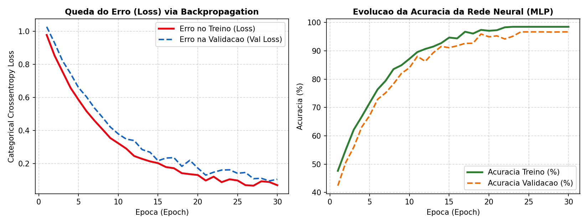

Redes Neurais Profundas,
PLN (Transformers) & LLMs
Do Neurônio Artificial ao Backpropagation, Análise de Sentimentos com BERT (pysentimiento), Agentes de IA e Atividade 02 da Trilha Skills Boost
Redes Neurais Artificiais:
Do Biológico ao Digital
Como neurônios matemáticos ajustam milhões de pesos sinápticos para aprender padrões complexos.
A Inspiração: Neurônio Biológico vs. Perceptron
No Cérebro Humano (Biológico)
- Dendritos (Recepção): Captam sinais elétricos/químicos vindos de outros neurônios.
- Sinapse (Força da Conexão): Define o quão forte ou fraca é a comunicação entre duas células.
- Corpo Celular (Soma): Acumula os estímulos; se ultrapassar um limiar, dispara um pulso pelo Axônio.
No Computador (Neurônio Artificial)
- Entradas ($x_1, x_2, x_n$): Valores numéricos dos atributos (ex: Cor, Rugosidade, Peso de uma fruta).
- Pesos ($w_1, w_2, w_n$) e Viés ($b$): Multiplicadores que definem a importância matemática de cada atributo.
- Função de Ativação ($\sigma$): Decide a saída final: $y = \sigma(\sum (x_i \cdot w_i) + b)$ (ex:
ReLU,Sigmoid,Softmax).
Recebe os dados brutos ($X$)
Multiplicação matricial de Pesos ($W$)
0.98 Laranja / 0.02 Maçã
O Ciclo de Aprendizado & Lab 3.1A (Simulador Interativo)
Entrada (Input)
A rede recebe os atributos numéricos da amostra (ex: Cor=0.9, Textura=0.2).
Predição (Forward)
Os sinais atravessam as camadas multiplicando pelos pesos atuais e geram um palpite.
Cálculo do Erro (Loss)
A Função de Custo mede a distância entre o palpite da IA e o gabarito real.
Backpropagation
O otimizador retropropaga o erro da saída para a entrada, corrigindo os pesos $w_i$!
Lab 3.1A: Simulador Maçã vs. Laranja
Acesse no navegador: https://irineufrancisco.github.io/ExemploRedeNeural/
Ajuste manualmente os pesos das sinapses (Vermelho, Amarelo, Textura) para que a rede diferencie uma Maçã (lisa/vermelha) de uma Laranja (rugosa/cítrica).
Apoio Visual & Reflexão de Escala
Vídeo: Como funciona uma Rede Neural (Manual do Mundo).
Reflexão: Calibrar 6 conexões à mão já exige atenção; modelos como o GPT-4 e Gemini possuem centenas de bilhões de pesos ajustados automaticamente via GPU!
Lab 3.1B (Colab): Rede Neural Densa com TensorFlow/Keras

Leitura das Curvas de Treinamento:
• Gráfico Esquerdo (Loss): O erro cai de 1.05 para 0.06 conforme o otimizador Adam ajusta os pesos a cada época.
• Gráfico Direito (Accuracy): Com StandardScaler + camadas densas, saltamos de 72% (Aula 1) para 96,7% de precisão!
Os Segredos do PLN:
Tokens, Embeddings & BERT
Como a arquitetura Transformer compreende contexto, negação, emojis e sarcasmo em Português.
Como o Computador Lê? A Pipeline do PLN
Fatiar a frase em unidades
['Eu', 'não', 'estou', 'bem'][1045, 2981, 4102, 2099]Mapa Semântico Vetorial
"feliz"[0.82, -0.14, 0.91, ...]"alegre" no espaço 3D!Transformers / BERT
Relaciona todas as palavras simultaneamente
"não" inverte o polo de "bem" $\to$ NEGATIVORevolução Transformer (Artigo Google 2017 — "Attention Is All You Need"): IAs antigas liam palavra por palavra sequencialmente e esqueciam o início da frase. Os modelos BERT e GPT/Gemini aplicam matrizes de Self-Attention para ponderar o contexto global de uma só vez.
Lab 3.2 (Colab): PLN em Português com BERT (pysentimiento)
No Google Colab, vamos instalar o pysentimiento e carregar uma rede Transformer (BERTimbau) pré-treinada em milhões de frases em Português:
O que é model.safetensors (540 MB)?
São os milhões de pesos sinápticos pré-treinados do modelo Transformer que são baixados do Hugging Face diretamente para a máquina virtual do seu Colab!
Lab 3.2: Os 4 Desafios de PLN e Interpretação das Saídas
Execute a função iniciar_analise() para os 4 casos clássicos abaixo e compare a distribuição de probabilidades do BERT:
Considerações sobre o Retorno da Atividade: No Desafio 4 (Sarcasmo), um algoritmo antigo baseado em dicionário veria a palavra "ótimo" e classificaria como Positivo. O modelo BERT usa Self-Attention para conectar "ótimo" ao evento "computador quebrou logo hoje", detectando a ironia com 94,7% de certeza negativa!
De LLMs Passivos a Agentes Autônomos (Agentic AI)
LLM Passivo vs. Agente de IA
- LLM Passivo: Apenas responde perguntas com base no seu treinamento congelado no tempo.
- Agente com RAG (Retrieval-Augmented Generation): Consulta PDFs, manuais da fábrica e bancos vetoriais antes de responder.
- Function Calling (Tools): O Agente decide executar queries SQL, chamar APIs externas ou rodar scripts Python autonomamente.
Por Trás do "B": Parâmetros e VRAM
- Modelos Nano (~3B a 8B): Rodam localmente em notebooks/celulares via
OllamaouLM Studiocom privacidade total. - Modelos Intermediários (~70B): Exigem GPUs dedicadas (40GB+ de VRAM) para inferência rápida.
- Modelos Fronteira (> 1 Trilhão): Processados em clusters de TPUs/GPUs na nuvem e consumidos via API REST.
Atividade 02 da Trilha:
Introduction to LLMs
Aprofundando em Grandes Modelos de Linguagem, Prompt Tuning e Vertex AI na plataforma oficial da Google.
Hora da Trilha! Atividade 02 no Google Cloud Skills Boost
Curso 2: Introduction to Large Language Models
Acesse o Google Cloud Skills Boost e inicie a 2ª atividade da trilha:
- O que você verá no vídeo: O que são LLMs, arquitetura Transformer, casos de uso corporativos e a diferença entre Prompt Design, Prompt Tuning e Fine-Tuning.
- Conexão com nossos Labs: Você acabou de rodar um Transformer real (BERT) no Colab e treinar uma rede neural com Backpropagation!
- Avaliação: Responda ao Quiz oficial ao final do módulo.
LEMBRETE OBRIGATÓRIO DE VÍDEO
Assista a todos os vídeos da Atividade 02 até o final!
Certifique-se de que o ícone de check verde apareceu ao lado do vídeo antes de enviar o Quiz para garantir a emissão do seu 2º Badge.
Meta de Hoje: 50% da Trilha Concluída
2 de 4 cursos concluídos com sucesso no Google Cloud Skills Boost!
Metade da Trilha Concluída!
Salvem seus notebooks de Redes Neurais e PLN no Google Drive (Ctrl+S). Na Aula 04, entraremos em Visão Computacional (YOLOv8, Leitura de Placas com OCR e Reconhecimento de Emoções com DeepFace) + Trilha 03 (IA Responsável)!